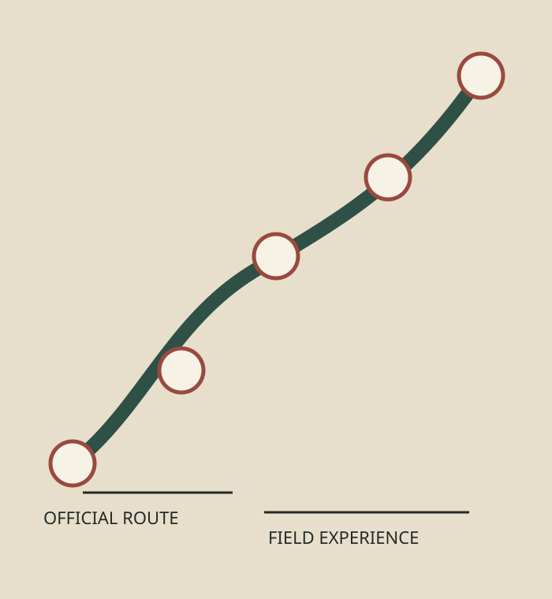
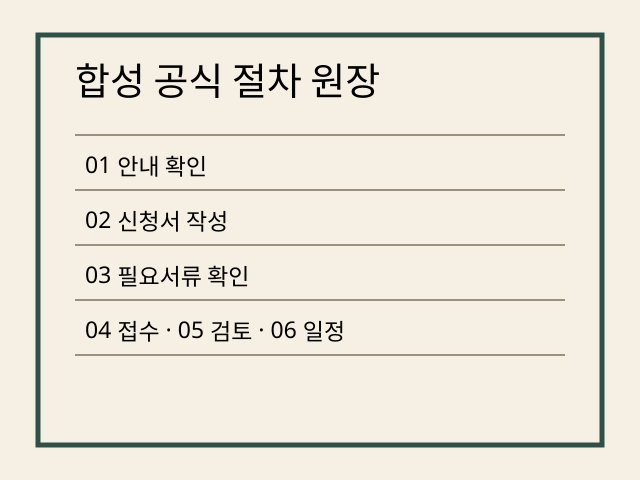
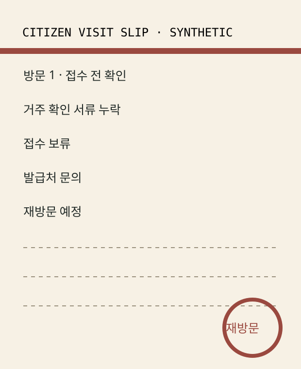
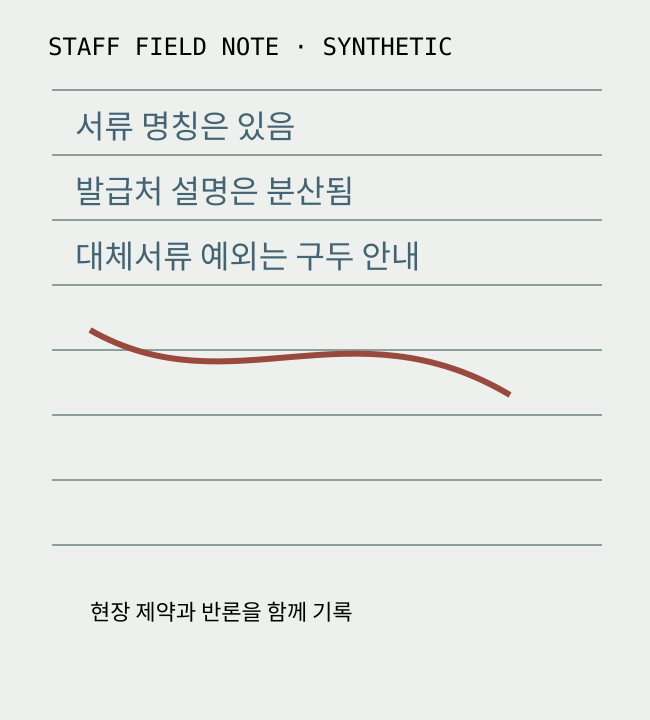
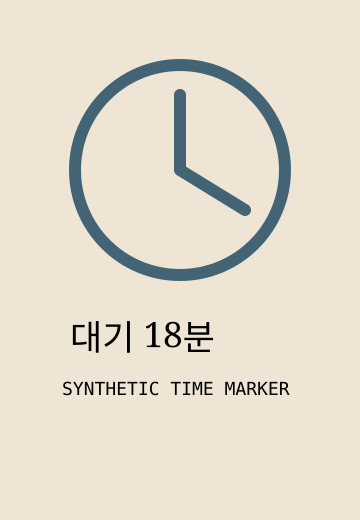
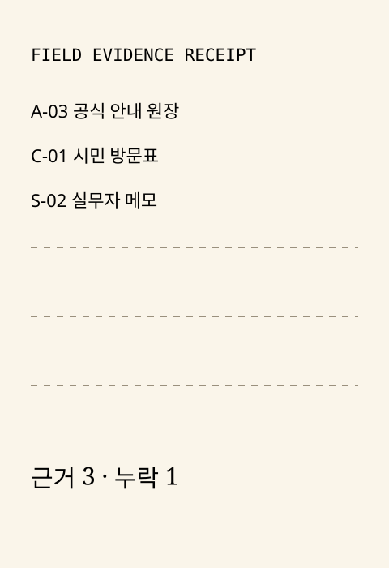
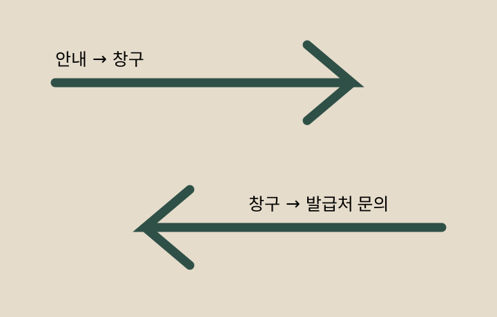
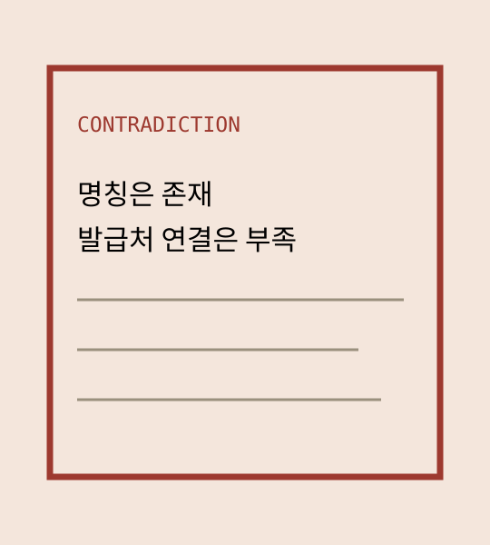
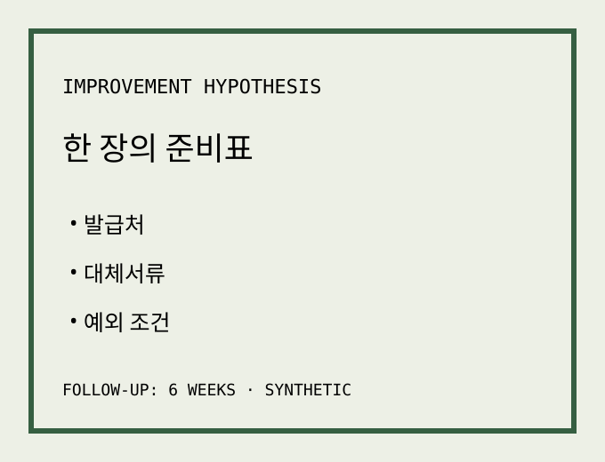
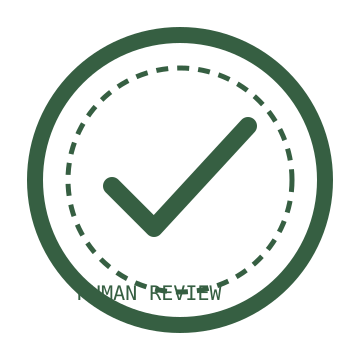

ATLAS 31 / HS-2026-Q3

OFFICIAL PROCEDURE
보행보조기 대여 지원 신청 절차
공식 절차와 시민·실무자의 실제 경험을 서로 섞지 않고, 차이와 병목을 증거 단위로 보존하는 합성 연구 원장.
BUSINESS 31 · UI_ONLY
Procedure Field Atlas · 절차 현장 지도

OFFICIAL PROCEDURE
공식 절차와 시민·실무자의 실제 경험을 서로 섞지 않고, 차이와 병목을 증거 단위로 보존하는 합성 연구 원장.
절차 원장 / OFFICIAL ROUTE

EXPERIENCE CARD 01

FIELD NOTE 02

“안내문에는 서류 이름이 있지만, 어디에서 발급받는지와 어떤 대체서류가 가능한지는 한 번에 설명되지 않습니다.”
STAFF EXPERIENCE — SYNTHETIC
모든 방문자에게 동일한 혼란이 발생한다고 단정할 수 없음.
창구에서는 여러 절차를 동시에 안내하므로 상세 설명 시간이 제한된다는 합성 반론을 보존한다.

EVIDENCE ALIGNMENT
| 기록 단위 | Authority | 확인 내용 | 상태 |
|---|---|---|---|
| 공식 안내 원장 A-03 | 절차 기준 | 거주 확인 서류 명칭 | OFFICIAL PROCEDURE |
| 시민 방문표 C-01 | 경험 기록 | 첫 방문 접수 보류 | CITIZEN EXPERIENCE — SYNTHETIC |
| 실무자 메모 S-02 | 현장 관찰 | 발급처 설명 부족 가능성 | STAFF EXPERIENCE — SYNTHETIC |
| 채널 확인 기록 | 미확인 | 사전 안내를 본 경로 | MISSING EVIDENCE |



공식 안내는 서류 명칭이 충분하다고 보지만, 경험 기록은 발급처·대체서류 설명이 부족했다고 기록한다.
TRACE 06
필요서류 확인 단계
거주 확인 서류 누락 → 재방문
발급처 설명을 매번 구두 보완
공식 안내 원장·방문표·현장 메모 정렬
서류 명칭과 발급처·대체서류가 분리됨
발급처·대체서류·예외를 한 장의 준비표로 통합
담당: 합성 서비스개선팀 · 6주 후 재방문률과 문의 유형 확인

HUMAN-REVIEWED FOLLOW-UP검토 재생 대기
OFFICIAL PROCEDURE
거주 확인 서류 누락으로 재방문.
발급처 설명을 현장에서 구두 보완.
시민이 확인한 사전 안내 채널.
발급처·대체서류·예외를 한 장으로 통합.